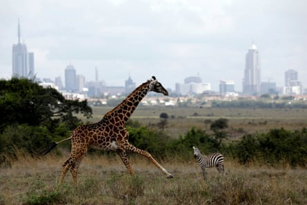
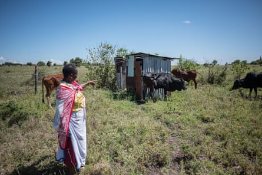
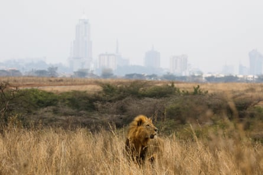
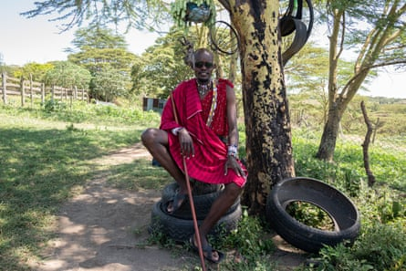

N airobi national park in Kenya is the only large wildlife conservation area to fall within a capital city. It is hemmed in on three sides by human development, and unfenced only on its southern boundary – this gap providing a crucial wildlife passageway, linking the park’s animals to other populations of wildlife and wider gene pools.
The gap, however, is also home to a small Maasai community, where farmers face an agonising choice between protecting livestock and making space for the predators that prey on their cattle.
Despite the dangers, the pastoralists are choosing to leave tracts of their land open, allowing the flow of wild animals to avoid what scientists call an “ecological extinction” via a shrinking gene pool.
The expansion of Nairobi, which now has nearly 6 million people, has blocked the movement of wildlife.Photograph: Amir Cohen/Reuters
“Our forefathers found the wild animals here,” says 55-year-old Isaac ole Kishoyian, a resident of Empakasi, a small settlement overlooking Nairobi national park. “There was enough prey before people built permanent settlements around the park.”
Now, wildebeests and impalas no longer migrate from the south, he says, and lions find his cows to be easy targets. “But we still want our children to enjoy the same wild heritage as we did.”

Isaac ole Kishoyian says a lion recently broke into his cattle pen.Photograph: E Ndeke/Guardian
Kishoyian has fenced off only a tiny portion of his 12-hectare (30-acre) piece of land. But lions still break through. A few weeks ago, a lion managed to enter the cattle pen while Kishoyian was away.
“My wife heard the commotion and scared the lion away before it could kill one of my cows,” he says.
Less than a mile from Kishoyian’s home, 68-year-old Phylis Enenoa plays with her great-grandson outside her iron-sheet home. Like Kishoyian, Enenoa has left most of her 11-hectare field unfenced, and her four cows graze alongside zebras, impalas and the occasional wildebeest.
Lion sightings are frequent around her home, their intentions always clear. The flimsy barbed-wire fence around the homestead can barely keep out the hungry predators, which have been responsible for the loss of 10 sheep and three cows.
“Look at the black one,” she says, pointing to one of her cows, which survived an attack about two weeks ago. “I don’t know how long she will survive in that condition.”
The lions lie in wait for the opportune time to strike. As we drive along a narrow dirt road near one of the homesteads, we freeze as our guide points to the shade of an acacia bush less than 10 metres away, where a lioness lies motionless, her amber eyes fixed on us.
Before the turn of the last century, rangelands south of Nairobi, including the present-day Amboseli national park, were all interconnected, providing enough room for wild animals to roam. However, the growth of human settlements, infrastructure, commercial activity and land fragmentation have blocked this movement, largely confining wild animals to the 117 sq km (45 sq mile) Nairobi national park .
Conservationists say each lost corridor around the park further restricts the trickle of fresh genes, resulting in isolated herds breeding with “cousins” rather than distant strangers. A smaller gene pool results in fewer wild herbivores, making hungry lions hunt more livestock.
Phylis Enenoa points to one of her cows, which was recently attacked by a lion.Photograph: Edwin Ndeke/The Guardian
“Shrinking genetic variety does more than change pedigrees – it chips away at survival traits forged over millennia,” says Dr Joseph Ogutu from Hohenheim University in Stuttgart, Germany, who has led wildlife researchers in publishing reports about the collapse of animal migrations in Africa.
“Inbreeding can shorten lifespans, curb fertility and weaken immune systems, leaving animals less able to navigate drought, disease or the urban noise,” he says.
“Every lion cub conceived [in the park] is denied the chance to mate beyond the tightening evolutionary noose,” he adds, warning of an “ecological extinction if the gene pool that once flowed across an open savanna is stagnating”.
Lions are increasingly targeting livestock as wild herbivore populations decrease.Photograph: Baz Ratner/Reuters
A single adult lion, says Ogutu, requires as much as three tonnes of meat a year – equivalent to 14 wildebeests but the park holds only a few hundred large ungulates other than buffalo and giraffe.
One of his research papers says wildebeests migrating between Nairobi national park and the adjacent Athi-Kaputiei plains “decreased from 30,000 animals in 1978 to less than 1,000 today”. As wild prey diminishes, livestock in nearby homesteads become easy pickings for predators, with the lions’ hunting “on the hungriest nights, risking confrontations with people”.
But the residents are willing to tolerate this uneasy coexistence by leaving the remaining corridors open and giving up economic activities that are not in line with wildlife conservation, such as crop farming or keeping large herds of livestock, if both government and wildlife conservation organisations ramp up compensation processes for their losses while compensating them financially for protecting biodiversity.
With 65-75% of wild animals in Kenya living outside conservation areas, the government relies on private landowners to host and protect wildlife. It is reviewing wildlife laws to entrench a more community-led approach to conservation.
Daniel Parsaurei says he is paid the equivalent of about £34 for opening up his land.Photograph: Edwin Ndeke/The Guardian
Silvia Museiya, from the state department for wildlife, says: “If people see no benefits of hosting wildlife on their land, they will convert [the land] to other uses.”
In April 2025, 256 landowners, including those adjacent to Nairobi national park, Amboseli and Masai Mara, more than 100 miles away, received $175,000 (£129,000), the first of a biannual payment earned from a pilot programme that pays landowners to keep more than 14,000 hectares (35,000 acres) open and intact. Each landowner will be paid $5 an acre each year, a modest amount that locals hope will increase as more join the programme and it attracts more finance.
“I got 6,000 shillings [£34] for my 20 acres of grassland,” says 35-year-old Daniel Parsaurei. “The amount is not much but … if we open up the land, we can all have enough grazing areas and help increase the wild animals so that lions can also have enough food and reduce attacks on cattle.”
The programme uses remote-sensing technologies developed by Andrew Davies at Harvard University to measure the extent of biodiversity within a given region and create “biodiversity credits” to sell for its protection. Proponents of this programme say it is a more direct and immediate form of nature financing, to incentivise the individuals who directly protect such biodiversity every day.
Viraj Sikand, co-founder of EarthAcre , a local startup that finds funders for biodiversity and monitors how such capital reaches local communities, says: “Unless such payments are delivered directly to landowners, all the land will go.”
According to Ogutu, without stakeholders restoring prey populations outside the park and reconnecting roaming routes, predators will remain both “victims and villains in a drama of our own making”.
“The choice is stark,” he says, “feed lions with functioning ecosystems, or watch them feed on livestock until neither can be sustained.”